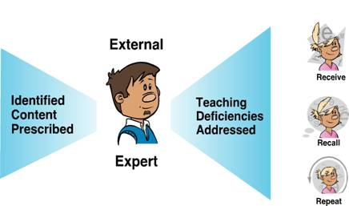
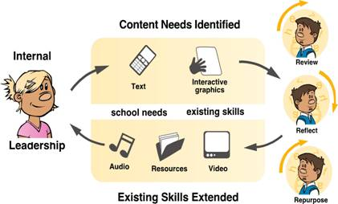
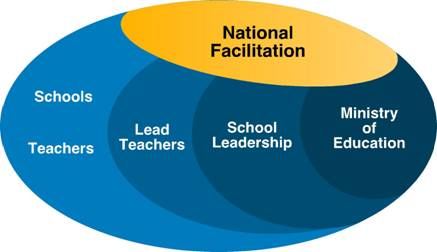

Search the Case Studies
Search the Articles
Search the Membership
Search MirandaNet
MirandaNet Fellowship Casestudy
Membership List | Publications | Research | Specialist Area List | Braided Learning Ejournal
The provision of professional development in ICT:
Exploring deficit and empowerment models
John Clayton
Year of posting: 2010
Abstract:
Over the last decade there have been significant increases in the integration of Information Communication Technologies (ICT) in New Zealand educational institutions. Investment in infrastructure, hardware and applications has been supported by a corresponding increase in the funding for Professional Development (PD) provision for staff in ICT. This is based on the assumption that the level of competence and confidence of staff in ICT impacts directly upon the capacity and capability of institutions to positively engage their learners in ICT-supported learning environments. Building on the experiences of investigations into the compulsory sectors "ICT PD cluster model" this paper highlights two distinct models, deficit and empowerment, currently used in the provision of professional development to staff.
Study
1. New Zealand Context
The rapid advancement of Information and Communication Technologies (ICT) has been referred to as the third revolution in the public dissemination of knowledge and in the enhancement of teaching and learning. The first revolution being the creation of a written language and readable records and the second the development of movable type and the publication of books (UNESCO 2008). To participate successfully in this new "information age", supported by increasingly globally-connected learning environments, individual New Zealand educational institutions, and successive Governments have increased their investments in ICTs (Ham, Gilmore, Kachelhoffer, Morrow, Moeau, & Wenmoth 2002). This investment in infrastructure, hardware and applications has been matched by a corresponding increase in the funding for professional development provision for staff in ICT. This increased provision of professional development acknowledges that the level of competence and confidence of staff in the educational use of ICT directly impacts upon the capacity and capability of institutions to positively engage their learners in ICT-supported learning environments (Clayton, Elliott & Saravani 2009a).
2. Provision of Professional Development
In the provision of professional development there appears to be a natural association between staff acquiring skills (are competent), and deploying these skills in their professional practice (are confident) with an underlying belief this use of ICT is beneficial to themselves as professionals and to their students as learners (are capable) (Clayton, Elliott, & Saravani, 2009). This suggests that, in structuring a balanced ICT PD programme, three key elements should be addressed:
- Competencies (How): Practical sessions should be offered on ‘how' to competently operate various ICTs both for administrative purposes and for learners to utilise them in their learning activities.
- Confidence (When): Sessions, enhanced by authentic examples, should be designed to show ‘when' ICTs can be successfully integrated into learning activities and administrative tasks.
- Capability (Why): Sessions, supported by applied research, should be structured to illustrate ‘why' using ICT in classrooms and for administrative purposes is beneficial to teachers, students and schools.
In the New Zealand compulsory sector the initial ICT professional development offered to New Zealand teachers followed the conventional models and modes of provision. In essence, a nationally perceived need (i.e. teachers' lack of personal ICT skills (competencies), knowledge of when to use ICT in learning events (confidence), and the associated theoretical understanding to effectively use ICT in the learning environments they created (capability) was centrally addressed. This was achieved by either, the creation of a range of structured professional development activities, provided within a defined timeframe, at specified locations and facilitated by external experts or, by the funding of a central advisory service that employed IT specialists to provide guidance to individual schools in the integration of ICT in the curriculum (Ham, et al 2002).
3. Deficit Models of Professional Development
This initial professional development provided, where external experts delivered preconceived learning events to specifically address their understanding of the identified deficiencies in teachers knowledge, did not fully acknowledge teachers held views of teaching and learning and ICT that would be resilient and resistant to change (Gilbert 1993). This centrally controlled broadcasting of learning events followed what could be considered a ‘deficit' model of professional development (Clayton, Elliott & Saravani 2009a). This deficit model is illustrated in Figure 1 below.

Figure 1: Deficit Professional Development Model
This Deficit Model fails to acknowledge that over the last five decades the views held by constructivists have significantly influenced the way professional development is conceptualised, designed and delivered. The separation between knowing and doing, described by the folk categories of 'know what' and 'know how' (Brown, Collins, & Duguid 1989) or more cynically "all-knowing" and "know-nothing" (Florida and Kenney, 1990) can no longer be sustained, A foundational premise of constructivism is the concept that knowledge is actively constructed by the participant, not passively received from the environment within which they are placed (Clayton, 2009, Driver 1989). To put it simply it appears impossible to transfer competencies and concepts of ICT in education wholesale into teachers' heads and expect these to remain intact or unaltered. In short, the presentation of pre-packaged ICT learning events to teachers does not necessarily mean changes in practice will occur.
4. ICT PD Cluster Model
Influenced by the school reforms of the early 1980s (Dept of Education 1989) and the devolvement of some operational responsibilities from central agencies to self-governing Boards of Trustees, a school-focused model of professional development was introduced in 1996. This was the Information Technology Professional Development (ICT PD) initiative (ICT Strategy Reference Group 1998). The ICT PD model encouraged groups of schools (clusters) to reflect upon the potential impact and influence of ICTs on their learning communities and stakeholders. This reflection aimed to assist schools in identifying why, when and how ICTs would be integrated within their current practice. This identification, coupled with schools' existing knowledge of their teachers' capabilities and confidence in ICT, would then influence school decisions on the focus, design, delivery and assessment of professional development activities (Clayton, Elliott & Saravani 2009a). Although each cluster designed their own sequence and focus of professional development activity within the cluster, the basic structure of the ICT PD model was centrally prescribed as follows (Ham, Toubat, & Williamson-Leadley, 2005);
- The programmes developed were to focus on the integration of ICTs into teachers' professional practices.
- A ‘Lead School' would take responsibility for the collaborative partnerships with other schools in the ICT PD Cluster and for the facilitation of teacher professional development within the clusters for a period of three years.
- Each lead school would administer the funding allocated and ensure it was allocated to teacher professional development and no other purpose.
5. Empowerment Models of Professional Development
The ICT PD model recognised reflection is a critical feature of sustainable commitment to quality delivery of ICT in educational settings in general and the provision of ICT PD in particular (Korthagen & Vasalos, 2005; Day, 1993; Marshall, 2006). The model acknowledged when reflection is used appropriately the findings of the process would help institutions;
- Reflect on their strengths and weaknesses in the integration of ICT within the curriculum.
- Identify action(s) that would increase teacher/learner competence, confidence and capability in the use of ICT in learning environments.
- Measure and report on the impact of the integration of ICT on learning events and administrative operations.
In essence, self-review creates a reflection-action-measurement cyclical model (R.A.M.) that iteratively builds institutional capability and capacity in an ICT. This reflection-action-measurement cycle is illustrated in Figure 2 below.

Figure 2: R.A.M. conceptual model
The ICT PD cluster model encouraged groups of schools to reflect upon teachers' capabilities and confidence in ICT, their current practices the potential and the impact of ICTs on their teaching and learning practices. In essence, the introduction of the ICT PD initiative shifted schools' and government's investment in professional development from funding a ‘deficit' approach to an ‘empowerment' approach (i.e. schools' internal reflection and decision making on how, when and why ICTs could be integrated drive the creation, provision, timing and content of school-focused professional development) (Clayton, Elliott & Saravani 2009a). This ‘empowerment' approach is illustrated in Figure 3 below.

Figure 3: Empowerment Professional Development Model
6. Inherent risks
The innovative shift from a deficit to an empowerment approach means institutions take ownership of the professional development process. This ownership places extra demands upon the institutional leadership. As well as undertaking their normal tasks, institutional leaders are now responsible for the effective design and efficient delivery of institutionally-focused professional development. This task was generally unanticipated when they were originally appointed to their roles. An identified risk inherent in this shift of approach is the ability of the existing leaders in institutions to undertake the complex task of identifying and then designing and delivering the relevant professional development activities to meet the institution's specific needs. To mitigate this risk in the compulsory sector, the New Zealand Ministry of Education funded a national facilitation team to assist school leaders to become familiar with the new tasks they faced during (Ham, Toubat, & Williamson-Leadley 2005).
As well as providing assistance with administrative and contractual obligations national facilitation was intended to (Clayton, Elliott & Saravani 2009a):
- Aid the development of ICT strategic plans for individual schools.
- Provide guidance on cluster administrative tasks.
- Provide guidance on the likely effectiveness and efficiency of the ICT professional development being planned.
- Plan and provide activities that allow regular networking opportunities.
- Identify and disseminate ‘exemplars' of good practice to inform the professional practices of other schools.
- Promote the creation of ‘communities of practice' around the implementation of ICTs in teaching, learning and administration.
The national facilitation, conceptualised as a ‘ripple model', is illustrated in Figure 4 below
.
Figure 4: National Facilitation Conceptual Model
7. Discussion
To participate successfully in increasingly globally-connected learning environments, New Zealand educational institutions and successive Governments have increased their funding for the provision of professional development in ICTs. This increased provision clearly acknowledges the competence and confidence of staff in the educational use of ICT impacts directly upon the capacity and capability of institutions to positively engage their learners in ICT-supported learning environments. In the compulsory sector the introduction of the ICT PD Cluster initiative has consciously shifted investment in PD from external provision to one with an internal focus. It replaced what could be described as a ‘deficit' professional development model with an ‘empowerment' model. The ICT PD Cluster initiative indicates a preference to empower schools to take ownership of the professional development process by becoming the analysers, producers, deliverers and consumers of relevant, authentic and sustainable professional development. This paper argues this empowerment approach could, and should, be a model used by educational institutions at all levels.
However, it is recognised a shift from deficit to empowerment models places extra demands upon institutional leadership. An identified risk inherent in the shift in models is the ability of the existing leaders in institutions to undertake the task of identifying and providing the appropriate PD activities to meet institutionally specific needs. To mitigate this risk it is argued a nationally funded ICT facilitation body, available to assist institutional leaders at all levels to become familiar with the complex tasks of identifying and designing institutionally tailored PD, is a logical framework to adopt.
This paper argues the effects of empowerment models of PD are positive. By ensuring appropriate just-in-time, just-enough and just-for-them advice and guidance is provided for institutional leaders in the identification and provision of PD, the empowerment model will result in a high degree of success. In essence, empowerment models provide educational institutions with the required competent and confident staff to increase their capacity and capability in ICT enabled learning environments.
8. References
Brown, J. S., Collins, A., & Duguid, P. 1989. Situated cognition and the culture of learning. Educational Researcher, 18(1), 32-42.
Clayton, J. (2009) Evaluating online learning environments: The development and validation of an online learning environment instrument. Köln, Germany: LAP Lambert Academic Publishing.
Clayton, J., Elliott, R, & Saravani, S. (2009) ICT PD Cluster Programme Research Review Project: Key findings from the ICT PD cluster programme research reports. Unpublished Project Report. Ministry of Education Research Division, Wellington.
Clayton, J., Elliott, R, & Saravani, S. (2009a) ICT PD Cluster Programme Research Review Project: Report of trends, lessons, and best practice, from exiting clusters. Unpublished Project Report. Ministry of Education Research Division, Wellington..
Clayton, J., Elliott, R, & Saravani, S. (2009b) ICT PD Cluster Programme Research Review Project: Report on international policy in the context of ICT PD. Unpublished Project Report. Ministry of Education Research Division, Wellington.
Day, C. (1993) Reflection: a necessary but not sufficient condition for professional development. British Educational Research Journal 19(2) 83-93
Driver, R. (1989). Students' conceptions and the learning of science. International Journal of Science Education, 11(Special Issue), 481 - 490.
Forida, R. & Kenney, M (1990). The breakthrough illusion: Corporate America's failure to move from innovation to mass production. Basic Books, Harper Collins, USA.
Gilbert, J. (1993). Teacher development: A literature review. In B. Bell (Ed.), I know about LISP but how do I put it into practice? (pp. 15-39). Hamilton: CSMER University of Waikato.
Ham, V., Gilmore, A., Kachelhoffer, A., Morrow, D., Moeau. P. & Wenmoth, D 2002. What makes for effective teacher professional development in ICT? : An evaluation of the 23 ICTPD school clusters programme 1999-2001. Wellington: Ministry of Education, Research Division.
Ham, V., Toubat, H., & Williamson-Leadley, S. 2005. National trends in the ICTPD school clusters programme 2002-2004. Christchurch: CORE Education NZ.
ICT Strategy Reference Group 1998. Interactive education: An information and communication technologies strategy for schools. Wellington: Ministry of Education.
Korthagen, F. & Vasalos, A. (2005) Levels in reflection: core reflection as a means to enhance professional growth. Teachers and Teaching 11(1) 47-71
Marshall, S. (2006). E-learning Maturity Model: Process assessment workbook. Wellington: Victoria University of Wellington.
New Zealand Dept. of Education. Implementation Unit 1989. Tomorrow's schools. Wellington: The Dept.
United Nations Educational, Scientific and Cultural Organization (UNESCO) (2008). "ICT Competency Standards for Teachers (ICT-CST): Policy Framework. UNESCO, United Kingdom.
[You can download this casestudy]
MirandaNet Members can go to the Log on/off area to edit their own casestudies.
[Back]